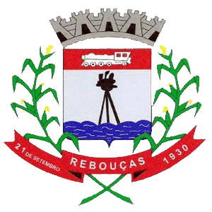

Bandeira e Brasão do Município de Rebouças
DISPÕE SOBRE OS SÍMBOLOS DO MUNICÍPIO DE REBOUÇAS, CONFORME ESPECIFICA A LEI Nº 251/1973.
Rebouças, com seu passado de glória Fez seu marco na história Orgulhando esta nação Valorosos ancestrais e pioneiros Reboucenses que empenharam Muito amor por este chão. Nós espelhamos no progresso desta gente E prosseguimos com os mesmos ideais Honrando sempre o torrão em que nascemos És tu Rebouças berço de glórias reais (Estribilho) REBOUÇAS, REBOUÇAS E AS BELEZAS DO NOSSO LUGAR O RIO POTINGA COM SUAS ÁGUAS CAUDALOSAS CAMPOS FLORIDOS CÉU DE ESTRELAS AO LUAR REBOUÇAS, REBOUÇAS GLORIOSO EXEMPLO ÀS VINDOURAS GERAÇÕES O PEITO CRESCE E O CORAÇÃO BATE MAIS FORTE QUANDO HASTEAMOS SUA BANDEIRA E SEUS BRASÕES II Rebouças, tens o solo abençoado Que por Deus foi preparado Pra semente germinar A lavoura da soja, feijão e milho Com carinho é cultivado Terra fértil, sempre há Agricultura com riqueza e abundância Pra nossa gente é bem mais tradição A madeira erva mate e a linha férrea Contribuíram no progresso da nação III Aqui vivemos na igualdade O respeito e a lealdade Será sempre, uma missão A perfeita integração de etnias Nos permite a harmonia De credo, religião Que o evangelho de Deus esteja presente Gerando sempre uma semente de amor E tu Rebouças que acolhe os filhos teus Tens o respeito e um futuro promissor
| Nome | Local | Telefone |
|---|---|---|
| Santo | Farmácia e Laboratório Santo Antônio | ------- |
| Praça dos Ferroviários | Av. Adolfo Stadler, Rebouças | ------- |
| Lopes | R. José Afonso Vieira Lopes | (42) 3457-1293 |